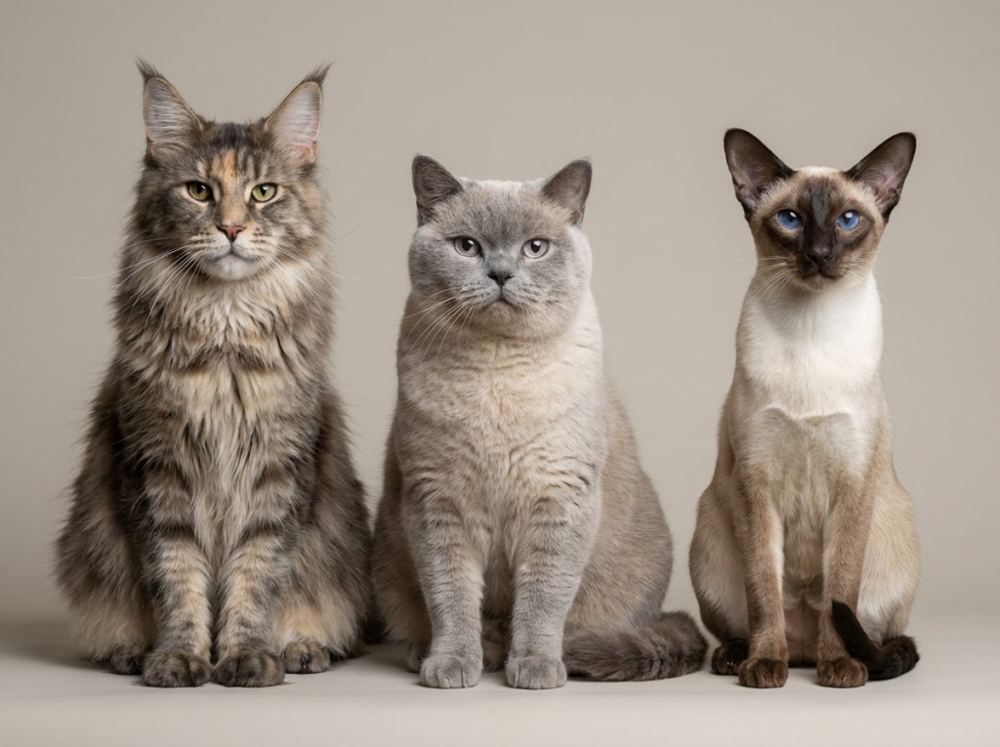
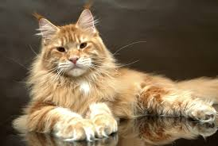
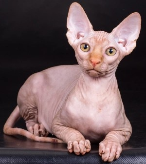
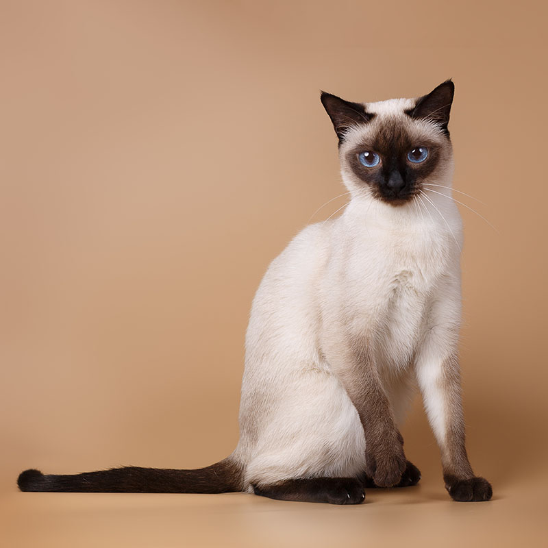
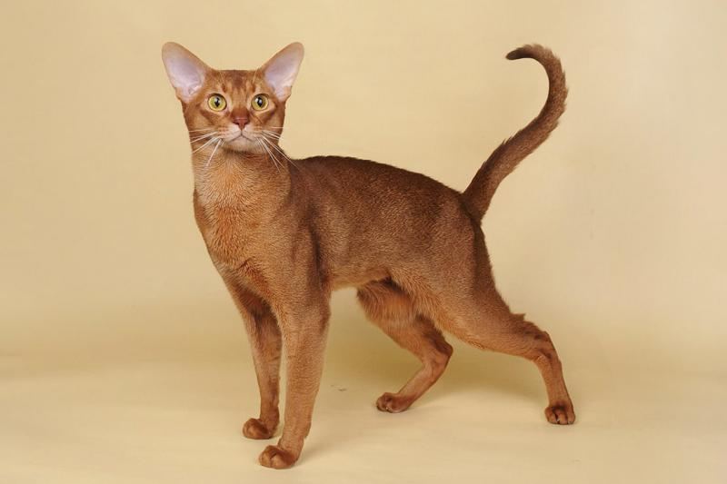

Коты

Коты — популярные домашние питомцы, сочетающие независимость и привязанность к человеку. Они легко адаптируются к жизни в квартире, оставаясь при этом игривыми и любознательными
Характеристики
- Тип: млекопитающее
- Продолжительность жизни: 12–18 лет
- Сложность ухода: средняя
- Уровень активности: средний
- Уровень шума: низкий
- Подходит для детей: да
- Необходимость выгула: нет
- Аллергенность: средняя
Породы

Мейн-кун

Сфинкс

Сиамская кошка

Абиссинская кошка